In an earlier example we demonstrated how easy it is to "upgrade" an existing quad mesh to a RefineableMesh that can be used with oomph-lib's mesh adaptation routines. The "upgrade" was achieved by multiple inheritance: We combined the basic (non-refineable) mesh object with oomph-lib's RefineableQuadMesh – a class that implements the required mesh adaptation procedures, using QuadTree - based refinement techniques for meshes that contain quadrilateral elements. During the refinement process, selected elements are split into four "son" elements and the nodal values and coordinates of any newly created nodes are determined by interpolation from the "father" element. This procedure is perfectly adequate for problems with polygonal domain boundaries in which the initial coarse mesh provides a perfect representation of the domain. The situation is more complicated in problems with curvilinear domain boundaries since we must ensure that successive mesh refinements lead to an increasingly accurate representation of the domain boundary.
To illustrate these issues we (re-)consider the 2D Poisson problem
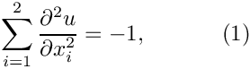 in the fish-shaped domain with homogeneous Dirichlet boundary conditions with homogeneous Dirichlet boundary conditions 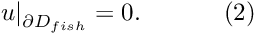 |
In Part 1 of this document we shall explain how oomph-lib's mesh adaptation procedures employ the Domain and MacroElement objects to adapt meshes in domains with curvilinear boundaries. In Part 2, we demonstrate how to create new Domain objects.
Part 1: Mesh adaptation in domains with curvilinear boundaries, using Domain and MacroElement objects
The plot below shows the domain , represented by the multi-coloured, shaded region and its (extremely coarse) discretisation with four four-node quad elements. The elements' edges and nodes are shown in black.

Obviously, the curvilinear boundaries of the fish-shaped domain (arcs of circles) are very poorly resolved by the elements' straight edges. Simple mesh adaptation, based on the techniques described in the earlier example will not result in convergence to the exact solution since the refined mesh never approaches the exact domain geometry:
To overcome this problem, the mesh adaptation routines must be given access to an exact, analytical representation of the actual domain. This is the purpose of oomph-lib's Domain object. A Domain provides an analytical description of a mathematical domain, by decomposing it into a number of so-called MacroElements. Each MacroElement provides a mapping between a set of local and global coordinates 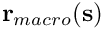 – similar to the mapping between the local and global coordinates in a finite element. The key difference between the two types of element is that the MacroElement mapping resolves curvilinear domain boundaries exactly, whereas the finite element mapping interpolates the global coordinates between the coordinates of its nodes. The topology of MacroElements mirrors that of the associated (geometric) finite elements: For instance, the QMacroElement family is the counterpart of the QElement family of geometric finite elements. Both are templated by the spatial dimension, and the local coordinates (in their right-handed local coordinate systems) are in the range between -1 and +1.
The different-coloured, shaded regions in the above sketch represent the four two-dimensional QMacroElements by which the FishDomain represents the fish-shaped domain  . For instance,
. For instance, MacroElement 0 (shown in orange) represents the lower half of the fish's body; within this MacroElement, the curved "belly" is represented by the line 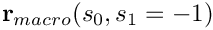 for 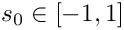; the lower "jaw" is represented by 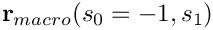 for 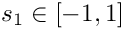; etc.
To illustrate the use of MacroElements / Domains, the following code fragment (from
fish_mesh.template.cc ) demonstrates how the constructor of the original, non-refineable FishMesh assigns the nodal positions. Each of the FishDomain's four QMacroElements is associated with one of the four finite elements in the mesh. Since both types of elements are parametrised by the same local coordinate systems, we determine the position of the node that is located at 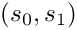 (in the finite element's local coordinate system) from the corresponding MacroElement mapping, 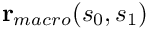:
This technique ensures that the mesh's boundary nodes are placed on the exact domain boundary when the mesh is created.
To retain this functionality during the mesh adaptation, each FiniteElement provides storage for a pointer to an associated MacroElement. By default, the MacroElement pointer is set to NULL, indicating that the element is not associated with a MacroElement. In that case, the coordinates of newly created nodes are determined by interpolation from the father element, as discussed above. If the MacroElement pointer is non-NULL, the refinement process refers to the element's MacroElement representation to determine the new nodal positions.
To enable the mesh adaptation process to respect the domain's curvilinear boundaries, each element in the coarse base mesh must therefore be given a pointer to its associated MacroElement, e.g. by using the following loop:
Once the mesh is aware of the curvilinear boundaries, each level of mesh refinement produces a better representation of the curvilinear domain, ensuring the convergence to the exact solution:
The results shown in this animation were computed with the demo code fish_poisson_adapt.cc – a simple modification of the code
fish_poisson.cc that we used in the earlier example. The only difference between the two codes is that in the present example, the FishDomain is discretised with four-node rather than nine-node RefineableQPoissonElements to highlight the inadequacy of the basic mesh refinement process. Note that, as a result of lower accuracy of the four-node elements, we require a much finer discretisation in the interior of the domain.
Part 2: How to represent domains with curvilinear boundaries by Domain and MacroElement objects
The above example demonstrated that "upgrading" existing meshes to RefineableMeshes that can be used with oomph-lib's mesh adaptation procedures, can be achieved in two trivial steps:
- Associate each
RefineableQElementwith aQuadTree– this can done completely automatically by calling the functionRefineableQuadMesh::setup_quadtree_forest(). - If the problem's domain has curvilinear boundaries, associate each
RefineableQElementwith aMacroElement– defined in theDomainobject that provides an
analytical representation of the domain.
While this looks (and indeed is) impressively simple, we still have to explain how to create Domain objects. We start by introducing yet another useful oomph-lib class, the GeomObject.
The geometric object, GeomObject
As the name suggests, GeomObjects are oomph-lib objects that provide an analytical description/parametrisation of geometric objects. Mathematically, GeomObjects define a mapping from a set of "Lagrangian" (intrinsic) coordinates to the global "Eulerian" coordinates of the object. The number of Lagrangian and Eulerian coordinates can differ. For instance, the unit circle, centred at the origin may be parametrised by a single coordinate,  (representing the polar angle), as
(representing the polar angle), as
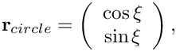
while a 2D disk may be parametrised by two coordinates 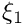 and 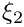 (representing the radius and the polar angle, respectively) as
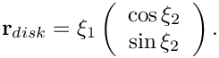
All specific GeomObjects must implement the pure virtual function GeomObject::position(...) which computes the Eulerian position vector  as a function of the (vector of) Lagrangian coordinates
as a function of the (vector of) Lagrangian coordinates  . (The
. (The GeomObject base class also provides interfaces for a multitude of other functions, such as functions that compute the spatial and temporal derivatives of the position vector. These functions are implemented as "broken" virtual functions and their implementation is optional; see the earlier example for a discussion of "broken" virtual functions.)
Here is a complete example of a specific GeomObject:
[The dummy time-dependent version of the position(...) function is required to stop the compiler from complaining about "only partially
overridden" virtual functions].
Domains
GeomObjects provide a natural way of representing a Domain's curvilinear boundaries. For instance, the fish's body in 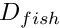 is bounded by two circular arcs. These may be represented by GeomObjects of type Circle – a slight generalisation of the UnitCircle class shown above. The FishDomain constructor therefore takes a pointer to a 2D GeomObject and the "start" and "end" values of the Lagrangian coordinate along this object. The GeomObject represents the curvilinear boundary of the fish's (upper) body and the two coordinates represent the Lagrangian coordinates of the "nose" and the "tail" on this GeomObject, as shown in this sketch:

To construct a FishDomain whose curvilinear boundaries are arcs of unit circles, centred at 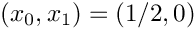 we create a GeomObject of type Circle, passing the appropriate parameters to its constructor:
Next, we pass the (pointer to the) Circle object to the constructor of the FishDomain, locating the "nose end" of the fish's back at 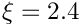 and its "tail end" at 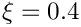:
To see how this works internally, let us have a look at the FishDomain constructor. The constructor stores the pointer to the fish's "back", and the start and end values of the Lagrangian coordinates in the private data members Back_pt, Xi_nose and Xi_tail. Next we set some additional parameters, that define the geometry (the mouth is located at the origin; the fin is a vertical line at 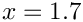, ranging from 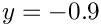 to 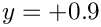). Finally, we allocate storage for the four MacroElements and build them. Note that the constructor of the MacroElement takes a pointer to the Domain, and the MacroElement's number within that Domain:
Most of the remaining public member functions are equally straightforward. We provide various access functions to the geometric parameters such as X_mouth, etc – we will not list these explicitly. All the "real work" is done in the implementation of the pure virtual function Domain::macro_element_boundary(...). Given
- the number of the
MacroElementin itsDomain - the direction of its boundary (N[orth], S[outh], E[ast], W[est], enumerated in the namespace
QuadTreeNames)
this function must compute the vector 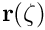 to the MacroElement's boundary. Here 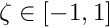 is the 1D coordinate along the element boundary, aligned with the direction of the MacroElement's 2D coordinates  as indicated in this sketch:
as indicated in this sketch:

Since the shape of the domain can evolve in time, the full interface for the function includes an additional parameter, t, which indicates the (discrete) time level at which the domain shape is to be evaluated. If t=0 the function computes the domain shape at the current time; if t>0 it computes the shape at the t -th previous timestep. (Another example in which we solve the unsteady heat equation in a moving domain, provides a a more detailed discussion of this aspect.) Here is the full interface for the FishDomain::macro_element_boundary(...) function:
The implementation of this function is the only tedious task that needs to be performed by the "mesh writer". Once Domain::macro_element_boundary(...) is implemented, the Domain's constituent MacroElements can refer to this function to establish the positions of their boundaries (recall that we passed the pointer to the Domain and the MacroElement's number in the Domain to the MacroElement constructor). The MacroElement::macro_map(...) functions interpolate the position of the MacroElement's boundaries into their interior.
To illustrate the general procedure, here is the complete listing of the FishDomain::macro_element_boundary(...) function. The function employs switch statements to identify the private member functions that provide the parametrisation of individual MacroElement boundaries. Some of these functions are listed below.
Here are a few of the private member functions that define individual MacroElement boundaries:
- The N[orthern] boundary of macro element 2 (which represents the upper body) coincides with the domain boundary that is parametrised by the geometric object pointed to by
Back_pt. The function translates the coordinate![$ \zeta \in [-1,1] $](form_28.png) to the Lagrangian coordinate 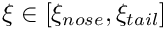 along the geometric object. We use this Lagrangian coordinate to obtain the position vector to the domain boundary via a call to the
to the Lagrangian coordinate 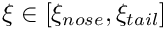 along the geometric object. We use this Lagrangian coordinate to obtain the position vector to the domain boundary via a call to the GeomObject::position(...)function of the geometric object pointed to byBack_pt://===============start_of_r_upper_body_N==============================/// Northern edge of upper body macro element; \f$ \zeta \in [-1,1] \f$//=====================================================================void FishDomain::r_upper_body_N(const unsigned& t,const Vector<double>& zeta,Vector<double>& r){// Lagrangian coordinate along curved "back"Vector<double> x(1);x[0] = Xi_nose + (Xi_tail - Xi_nose) * 0.5 * (zeta[0] + 1.0);// Get position on curved backBack_pt->position(t, x, r);} // end of r_upper_body_N - The E[astern] boundary of macro element 2 is a straight vertical line from the "tail end" of the curved fish back to the x-axis: //================start_of_r_upper_body_E=============================/// Eastern edge of upper body macro element; \f$ \zeta \in [-1,1] \f$//=====================================================================void FishDomain::r_upper_body_E(const unsigned& t,const Vector<double>& zeta,Vector<double>& r){// Top right corner (tail end) of bodyVector<double> r_top(2);Vector<double> x(1);x[0] = Xi_tail;Back_pt->position(t, x, r_top);// Corresponding point on the x-axisVector<double> r_back(2);r_back[0] = r_top[0];r_back[1] = 0.0;} // end of r_upper_body_E
- The S[outhern] boundary of macro element 2 is a straight horizontal line from the "mouth" to the end of the body: //==================start_of_r_upper_body_S============================/// Southern edge of upper body macro element; \f$ \zeta \in [-1,1] \f$//=====================================================================void FishDomain::r_upper_body_S(const unsigned& t,const Vector<double>& zeta,Vector<double>& r){// Top right (tail) corner of fish bodyVector<double> r_top(2);Vector<double> x(1);x[0] = Xi_tail;Back_pt->position(t, x, r_top);// Straight line from mouth to start of fin (=end of body)r[0] = X_mouth + (r_top[0] - X_mouth) * 0.5 * (zeta[0] + 1.0);r[1] = 0.0;} // end of r_upper_body_S
- The W[estern] boundary of macro element 2 is a straight line from the "mouth" to the "mouth" end of the curved upper boundary of the body: //===============start_of_r_upper_body_W==============================/// Western edge of upper body macro element; \f$ \zeta \in [-1,1] \f$//====================================================================void FishDomain::r_upper_body_W(const unsigned& t,const Vector<double>& zeta,Vector<double>& r){// Top left (mouth) corner of curved boundary of upper bodyVector<double> r_top(2);Vector<double> x(1);x[0] = Xi_nose;Back_pt->position(t, x, r_top);// The "mouth"Vector<double> r_mouth(2);r_mouth[0] = X_mouth;r_mouth[1] = 0.0;// Straight line from mouth to leftmost corner on curved boundary// of upper bodyr[0] = r_mouth[0] + (r_top[0] - r_mouth[0]) * 0.5 * (zeta[0] + 1.0);r[1] = r_mouth[1] + (r_top[1] - r_mouth[1]) * 0.5 * (zeta[0] + 1.0);} // end of r_upper_body_W
- The S[outhern] boundary of macro element 0 (which represents the lower body) is simply a reflection of the N[orthern] boundary of macro element 2: ///\short Southern boundary of lower body macro element zeta \f$\in [-1,1]///\f$void r_lower_body_S(const unsigned& t,const Vector<double>& zeta,Vector<double>& f){// South of lower body is element is north of upper one.// Direction of the coordinate stays the same.r_upper_body_N(t, zeta, f);// Reflect vertical position}
- etc.
Tedious? Yes! Rocket Science? No!
Further comments
Node updates in response to changes in the Domain shape.
You may have noticed that, even though we introduced MacroElements in the context of adaptive mesh refinement, the pointer to a refineable element's MacroElement is stored in the FiniteElement, rather than the (derived) RefineableElement class, suggesting that MacroElements have additional uses outside the context of mesh adaptation. Indeed, the code fragment that illustrated the use of Domains and MacroElements during mesh generation, was taken from the constructor of the non-refineable FishMesh, rather than its adaptive counterpart. During the mesh generation process, the FiniteElement's MacroElement representation was used to determine the position of its Nodes within the Domain. The same procedure can be employed to update the nodal positions in response to changes in the domain shape. This is implemented, generically, in the function
This function loops over all elements in a Mesh and updates their nodal positions in response to changes in the domain boundary. (If the Mesh's constituent elements's are not associated with MacroElements and if the Mesh does not implement the node update by other means, this function does not change the mesh.)
The following code fragment illustrates the trivial modifications to the driver code required to compute the solution of Poisson's equation in fish-shaped domain of various widths. We simply change the position of the GeomObject that specifies the curvilinear boundary (by changing the position of the circle's centre), call the Mesh::node_update() function, and recompute the solution.
The rest of the code remains unchanged. Here is a plot of the solution for various widths of the domain (computed with nine-node elements).

Good practice: Storing boundary coordinates
The above example demonstrated how the representation of curvilinear domain boundaries by GeomObjects allows oomph-lib's mesh generation and adaptation procedures to place nodes on these boundaries. We note that the Lagrangian coordinate(s) that parametrise(s) the relevant GeomObjects also provide a parametrisation of the corresponding domain boundaries. In certain applications (such as free-boundary or fluid-structure interaction problems) it is useful to have direct access to these boundary coordinates. For this purpose the Node class provides the function
which allows the mesh writer to store the (vector of) boundary coordinates that a given (Boundary)Node is located at. The argument b specifies the number of the mesh boundary, reflecting the fact that nodes may be located on multiple domain boundaries, each of which is likely to have a different set of surface coordinates. [Note: The function is implemented as a broken virtual function in the Node base class. The actual functionality to store boundary coordinates is only provided in (and required by) the derived BoundaryNode class.]
Since the storage of boundary coordinates is optional, the Mesh base class provides a protected vector of bools,
that indicates if the boundary coordinates have been stored for all Nodes on a specific mesh boundary. This vector is resized and its entries are initialised to false, when the number of mesh boundaries is declared with a call to Mesh::set_nboundary(...). If, during mesh refinement, a new BoundaryNode is created on the mesh's boundary b, its boundary coordinates are computed by interpolation from the corresponding values at the nodes in the father element, if Mesh::Boundary_coordinate_exists[b] has been set to true.
We regard it as good practice to set boundary coordinates for all BoundaryNodes that are located on curvlinear mesh boundaries. The source code fish_mesh.template.cc for the refineable FishMesh illustrates the methodology.
Source files for this tutorial
- The source files for this tutorial are located in the directory:
demo_drivers/poisson/fish_poisson2/ - The driver code is:
demo_drivers/poisson/fish_poisson2/fish_poisson_adapt.cc
PDF file
A pdf version of this document is available.